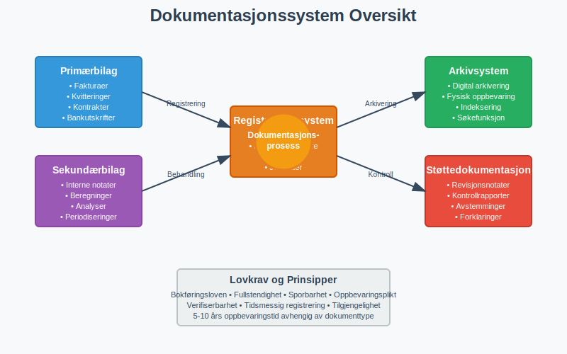
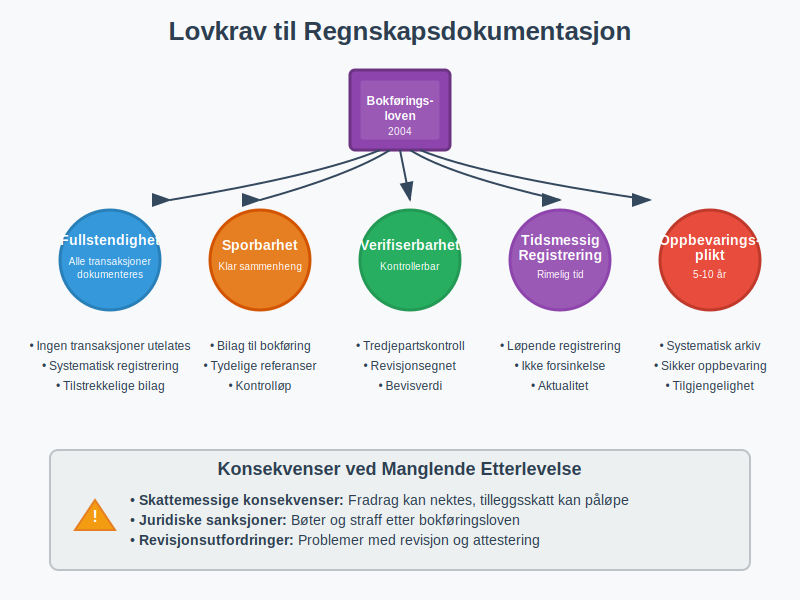
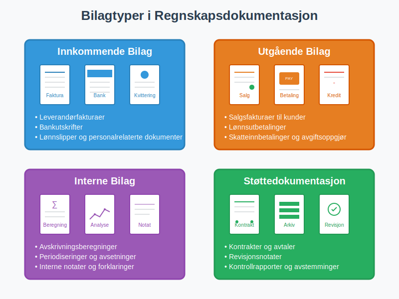
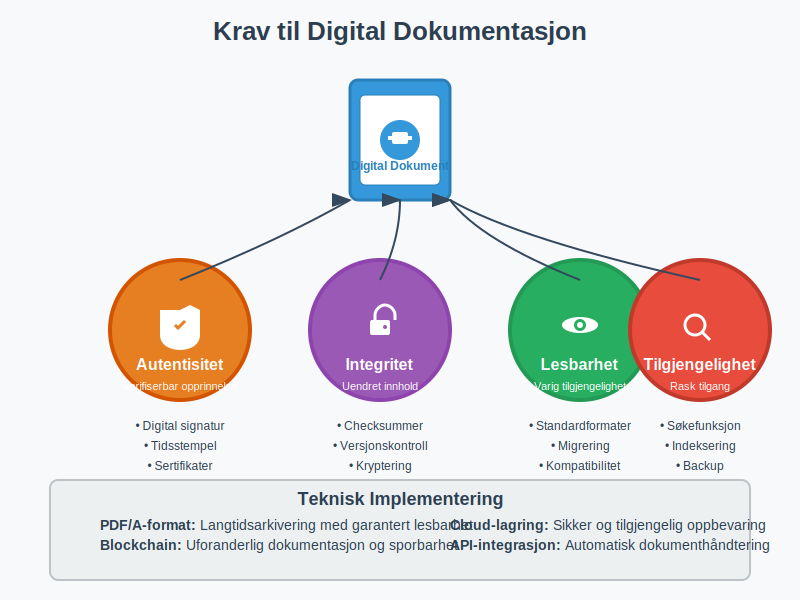
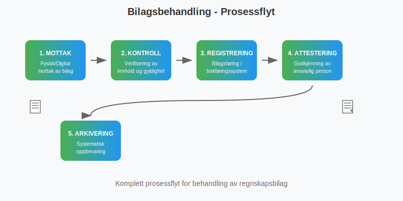
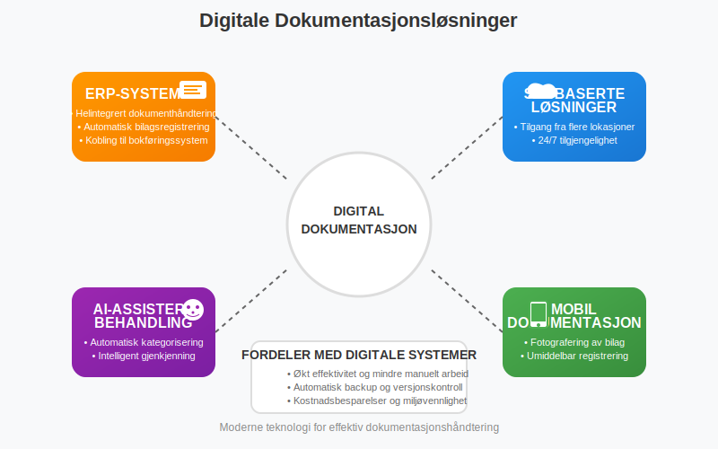
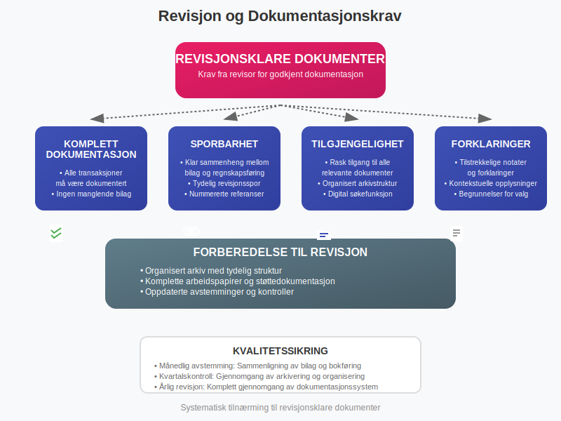
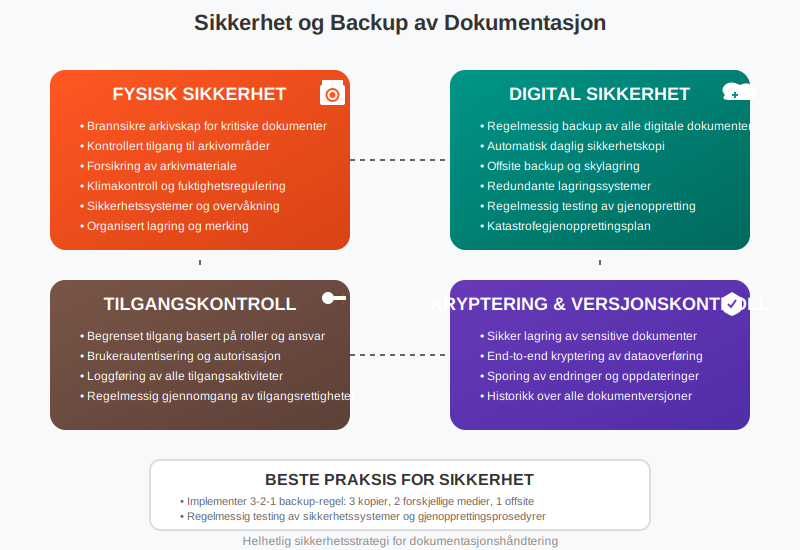

Dokumentasjon i regnskap og bokføring er det juridiske og praktiske fundamentet som sikrer sporbarhet, kontroll og etterlevelse av norske regnskapsregler. Som en kritisk del av bokføring og regnskapsføring, omfatter dokumentasjon alle bilag, registreringer og støttedokumenter som kreves for å bevise og forklare økonomiske transaksjoner.
Hva er Dokumentasjon i Regnskap og Bokføring?
Regnskapsdokumentasjon er samlingen av alle dokumenter, bilag og registreringer som støtter og beviser de økonomiske transaksjonene som er ført i virksomhetens regnskap. Dette inkluderer både fysiske og digitale dokumenter som sammen danner et komplett sporingsløp fra den opprinnelige transaksjonen til den endelige regnskapsføringen.

Hovedkomponenter i Regnskapsdokumentasjon
- Primærbilag: Fakturaer, kvitteringer, kontrakter og andre originaldokumenter
- Sekundærbilag: Interne dokumenter som støtter regnskapsføringen
- Registreringer: Bilagsføring og bokføringsregistre
- Støttedokumentasjon: Beregninger, analyser og forklarende notater
- Arkivmateriale: Organisert oppbevaring av all dokumentasjon
Lovkrav til Regnskapsdokumentasjon
Bokføringsloven og bokføringsforskriften setter strenge krav til dokumentasjon av regnskapsopplysninger.
Grunnleggende Dokumentasjonskrav
Lovpålagte prinsipper:
- Fullstendighet: Alle transaksjoner må dokumenteres med tilstrekkelige bilag
- Sporbarhet: Klar sammenheng mellom bilag og regnskapsføring
- Verifiserbarhet: Dokumentasjonen må kunne kontrolleres av tredjeparter
- Tidsmessig registrering: Dokumentasjon må skje innen rimelig tid
- Oppbevaringsplikt: Systematisk arkivering i påkrevd periode

Oppbevaringstid for Regnskapsdokumentasjon
| Dokumenttype | Oppbevaringstid | Særlige krav |
|---|---|---|
| Regnskapsbilag | 5 år | Fra regnskapsårets slutt |
| Årsregnskap | 10 år | Inkludert revisjonsberetning |
| Grunnlagsdokumenter | 5 år | Kontrakter, avtaler, fullmakter |
| Lønnsopplysninger | 5 år | Personalregistre og lønnsbilag |
| MVA-dokumentasjon | 10 år | Alle MVA-relaterte bilag |
| Skattemessige dokumenter | 10 år | Grunnlag for skatteberegning |
For en omfattende guide til oppbevaring av regnskapsmateriale, inkludert detaljerte oppbevaringsfrister, digitale løsninger, sikkerhetskrav og compliance-strategier, se vår spesialiserte artikkel.
Typer Regnskapsdokumentasjon
1. Primære Regnskapsbilag
Innkommende bilag:
- Leverandørfakturaer og kreditnotaer
- Bankutskrifter og kontoutskrifter
- Lønnslipper og personalrelaterte dokumenter
- Offentlige avgifter og skattedokumenter
- Forsikringsdokumenter og premier
Utgående bilag:
- Salgsfakturaer til kunder
- Kreditnotaer og debetnotaer
- Gjenpartsbrev: En attestert kopi av et bilag som bekrefter at kopien er identisk med originaldokumentet.
- Lønnsutbetalinger og personalutgifter
- Skatteinnbetalinger og avgiftsoppgjør

2. Støttedokumentasjon og Interne Bilag
Interne beregninger:
- Avskrivningsberegninger og -planer
- Amortiseringsplaner for immaterielle eiendeler
- Varetellinger og lageroppgjør
- Periodiseringer og avsetninger
Kontraktsgrunnlag:
- Kjøps- og salgsavtaler
- Leieavtaler og serviceavtaler
- Forsikringspoliser
- Lånekontrakter og finansieringsavtaler
3. Digitale Dokumenter og Elektronisk Arkivering
Digitale bilag:
- E-fakturaer og elektroniske betalingsbilag
- Digitale bankutskrifter
- Elektroniske kvitteringer
- Skannede dokumenter
Krav til digital dokumentasjon:
- Autentisitet: Dokumentets opprinnelse må kunne verifiseres
- Integritet: Innholdet må være uendret siden opprettelsen
- Lesbarhet: Dokumentet må være lesbart gjennom hele oppbevaringsperioden
- Tilgjengelighet: Rask og enkel tilgang for kontroll og revisjon

Organisering og Arkivering av Regnskapsdokumentasjon
Systematisk Arkivering
Kronologisk organisering:
- Månedlig arkivering av løpende bilag
- Årlig samling av årsavslutningsdokumenter
- Systematisk nummerering og referanser
Tematisk kategorisering:
- Salgsbilag og kundefordringer
- Innkjøpsbilag og leverandørgjeld
- Lønns- og personaldokumenter
- Bank- og finansdokumenter
- Skatte- og avgiftsdokumenter
- Spesialdokumentasjon som kjørebøker for bilkostnadsfradrag
Digital Arkivløsning
| Arkivkomponent | Funksjon | Beste praksis |
|---|---|---|
| Dokumenthåndtering | Mottak og registrering | Automatisk bilagsmottak |
| Indeksering | Søk og gjenfinning | Konsistent navngiving og tagging |
| Sikkerhet | Tilgangskontroll | Backup og versjonskontroll |
| Integrasjon | Kobling til bokføringssystem | Automatisk bilagsregistrering |

Dokumentasjon i Praktisk Bokføring
1. Bilagsbehandling og Registrering
Innkommende bilagsflyt:
- Mottak: Fysisk eller digital mottak av bilag
- Kontroll: Verifisering av innhold og gyldighet
- Registrering: Bilagsføring i bokføringssystem
- Attestering: Godkjenning av ansvarlig person
- Arkivering: Systematisk oppbevaring
Utgående bilagsflyt:
- Opprettelse: Generering av salgsfakturaer eller andre utgående bilag
- Utsendelse: Levering til mottaker
- Oppfølging: Kontroll av betaling og eventuelle reklamasjoner
- Arkivering: Oppbevaring av kopier og betalingsbekreftelser

2. Kvalitetssikring av Dokumentasjon
Kontrollrutiner:
- Månedlig avstemming: Sammenligning av bilag og bokføring
- Kvartalskontroll: Gjennomgang av arkivering og organisering
- Årlig revisjon: Komplett gjennomgang av dokumentasjonssystem
Vanlige feil og hvordan unngå dem:
- Manglende bilag: Implementer rutiner for komplett bilagssamling
- Feil datering: Bruk transaksjonsdato, ikke mottaksdato
- Utilstrekkelig beskrivelse: Legg til forklarende notater ved behov
- Dårlig arkivering: Etabler konsistente arkiveringsrutiner
Digitale Løsninger for Dokumentasjon
Moderne Dokumentasjonssystemer
Integrerte løsninger:
- ERP-systemer: Helintegrert dokumenthåndtering
- Skybaserte løsninger: Tilgang fra flere lokasjoner
- AI-assistert behandling: Automatisk kategorisering og registrering
- Mobil dokumentasjon: Fotografering og umiddelbar registrering
Fordeler med digitale systemer:
- Effektivitet: Raskere behandling og mindre manuelt arbeid
- Sikkerhet: Automatisk backup og versjonskontroll
- Tilgjengelighet: 24/7 tilgang fra flere enheter
- Miljøvennlighet: Redusert papirforbruk
- Kostnadsbesparelser: Mindre fysisk lagringsplass

Implementering av Digital Dokumentasjon
Faser i digitaliseringsprosessen:
- Kartlegging: Analyse av eksisterende dokumentasjonsrutiner
- Planlegging: Utvikling av digital strategi og systemvalg
- Implementering: Gradvis overgang til digitale løsninger
- Opplæring: Kompetansebygging for ansatte
- Optimalisering: Kontinuerlig forbedring av prosesser
Dokumentasjon og Revisjon
Revisjonsklare Dokumenter
Krav fra revisor:
- Komplett dokumentasjon: Alle transaksjoner må være dokumentert
- Sporbarhet: Klar sammenheng mellom bilag og regnskapsføring
- Tilgjengelighet: Rask tilgang til alle relevante dokumenter
- Forklaringer: Tilstrekkelige notater og forklaringer
Forberedelse til revisjon:
- Organisert arkiv med tydelig struktur
- Komplette arbeidspapirer og støttedokumentasjon
- Oppdaterte avstemminger og kontroller
- Tilgjengelig personale for spørsmål og oppklaringer

Beste Praksis for Regnskapsdokumentasjon
Etablering av Dokumentasjonsrutiner
Daglige rutiner:
- Umiddelbar registrering av alle bilag
- Konsistent navngiving og arkivering
- Regelmessig backup av digitale dokumenter
Månedlige rutiner:
- Komplett gjennomgang av alle bilag
- Bankavstemming og kontroll
- Oppdatering av arkivsystem
Årlige rutiner:
- Komplett arkivering av årets dokumenter
- Gjennomgang og opprydding i arkivsystem
- Evaluering og forbedring av dokumentasjonsrutiner
Sikkerhet og Backup
Fysisk sikkerhet:
- Brannsikre arkivskap for kritiske dokumenter
- Kontrollert tilgang til arkivområder
- Forsikring av arkivmateriale
Digital sikkerhet:
- Regelmessig backup: Daglig sikkerhetskopi av alle digitale dokumenter
- Tilgangskontroll: Begrenset tilgang basert på roller og ansvar
- Kryptering: Sikker lagring av sensitive dokumenter
- Versjonskontroll: Sporing av endringer og oppdateringer

Fremtiden for Regnskapsdokumentasjon
Teknologiske Trender
Kunstig intelligens:
- Automatisk kategorisering og registrering av bilag
- Intelligent gjenkjenning av dokumenttyper
- Prediktiv analyse for kvalitetskontroll
Blockchain-teknologi:
- Uforanderlig dokumentasjon og sporbarhet
- Automatiske smarte kontrakter
- Desentralisert arkivering
Skybaserte løsninger:
- Ubegrenset lagringskapasitet
- Global tilgjengelighet
- Automatiske oppdateringer og vedlikehold
Regulatoriske Endringer
Kommende krav:
- Strengere krav til digital dokumentasjon
- Økt fokus på cybersikkerhet
- Harmonisering med internasjonale standarder
Forberedelser:
- Kontinuerlig oppdatering av systemer
- Kompetansebygging innen nye teknologier
- Proaktiv tilpasning til nye regelverk
Konklusjon
Dokumentasjon i regnskap og bokføring er fundamentet for pålitelig finansiell rapportering og lovmessig etterlevelse. Gjennom systematisk organisering, moderne digitale løsninger og beste praksis sikrer virksomheter både effektiv drift og juridisk trygghet.
Effektiv dokumentasjon krever:
- Systematisk tilnærming: Klare rutiner og prosedyrer
- Teknologisk støtte: Moderne digitale løsninger
- Kontinuerlig forbedring: Regelmessig evaluering og oppdatering
- Kompetanse: Opplæring og utvikling av personale
Ved å investere i solid dokumentasjonspraksis legger virksomheter grunnlaget for både daglig drift og langsiktig vekst, samtidig som de oppfyller alle lovmessige krav til regnskapsføring og arkivering.